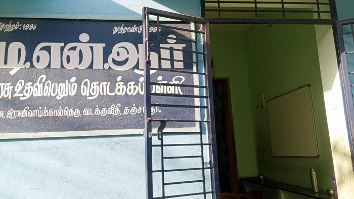

- எமது பள்ளியில் 1ம் முதல் 5ம் வகுப்பு வரை செயல்படுகிறது.
- மாணவர்களுக்கு அரசு சீருடை, புத்தகம் மற்றும் நோட்டு புத்தகங்கள் வழங்கப்படுகிறது.
- அரசு சீருடை தவிர கூடுதலாக மாணவர்களுக்கு பள்ளியின் சார்பாக ஒரு சீருடையும் வழங்கப்படுகிறது.
- தாழ்த்தப்பட்ட மாணவர்களுக்கு அரசால் வழங்கப்படும் கல்வித்தொகையானது பெற்றுத்தரப்படுகிறது.
- அனைத்து வகுப்பிற்கும் சுத்தமான குடிநீர் வசதி, கழிப்பிட வசதி, மின் விளக்கு மற்றும் மின் விசிறி வசதிகள் உள்ளன.
- மாவட்ட அளவில் நடை பெறும் கலை நிகழ்ச்சிகள் மற்றும் போட்டிகளில் பங்கேற்கும் வண்ணம் மாணவர்களுக்கு பயிற்சி அளிக்கப்படுகிறது.
- அனைத்து சமுதாய விழாக்களும், தேசிய விழாக்களும் சிறப்பாக கொண்டாடப்படுகிறது.
- வாரம் ஒருமுறை நன்னெறி வகுப்புகள் நடத்தப்படுகிறது.
- வருடத்திற்கு 4 முறை பெற்றோர் ஆசிரியர் கூட்டம் நடைபெறுகிறது.
- விளையாட்டு போட்டிகள் நடத்தப்பட்டு மாணவர்களுக்கு பரிசுகள் வழங்கப்படுகிறது.
- அறிவியல் கண்காட்சி நடத்தப்பட்டு மாணவர்களின் படைப்புகள் காட்சிக்கு வைக்கப்படுகிறது.
- தேசத்தலைவர்களின் பிறந்த நாள் விழாக்கள் சிறப்பாக கொண்டாடப்படுகிறது.
- பொங்கல் விழா கொண்டாட்டத்தில் தமிழர் பண்பாடு மற்றும் கலாச்சாரத்தை போற்றும் வகையில் ஆடைகள் அணிந்து கோலப்போட்டி,பல்லாங்குழி, சிலம்பு போன்ற போட்டிகள் நடைபெறுகிறது.
|

|